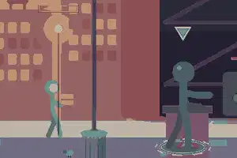
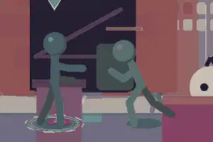
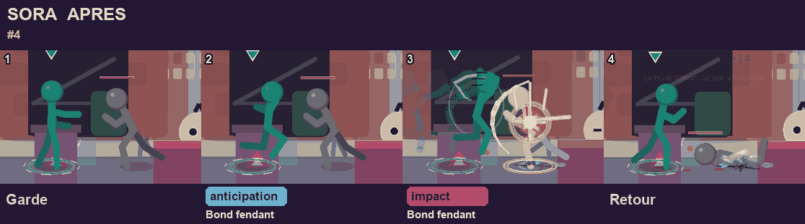
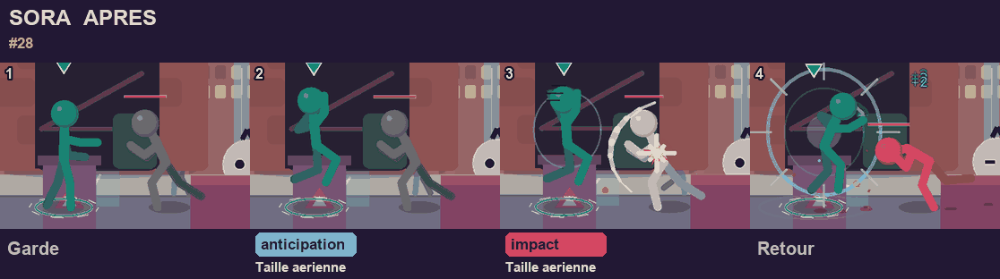

GIF du vrai moteur. Avant = moteur avant ce lot, apres = moteur actuel. Meme case de l'arbre, memes images, degats et hitbox : seul le dessin change.
Sora_4 : Bond fendant
La detente de l'impact est repartie sur les dernieres images d'armement (saut d'articulation 46 px, maintenant 17 px) et le pas du bassin est plus long : le sabre dessine atteint la portee (58 px mesures avant : regle R3 en echec ; elle passe maintenant). Plus aucune exception dans KNOWN_ISSUES.
Avant

Apres

Images-cles

Sora_10 : Arc aerien
Le geste de lame suit le bras vers la cible au lieu de tourner trois fois sur lui-meme : poignet max 106 deg (limite 115), variation max 55 deg/image (limite 70), contre 164 deg et 281 deg/image avant.
Raccord d'atterrissage : quand le sol coupe le coup en pleine pose, la pose glisse vers la reception sur 6 images (saut 40 px, maintenant 11 px). Vaut pour tous les coups aeriens (rendu seul, champ non hache).
AvantApres
Images-cles

Garde-fou de visee (SlashOver / SlashD / SlashH) sur les autres heros
Mesure sur tous les heros : 14 coups modifies, uniquement Sora (9) et Bo (4, baton) ; aucun autre heros n'a ces gestes. Aucun defaut de coherence ajoute ; distance bout-cible en phase active : +0 a +12 px pour Bo. Captures sans / avec garde-fou (banc de poses, meme exe, AFH_AIMGUARD_OFF=1 pour l'avant).